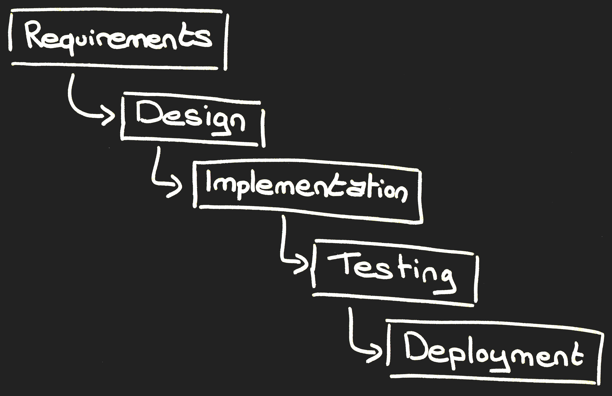
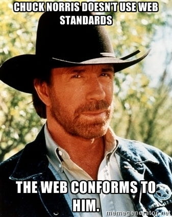

Waterfall to DevOps
September 12th, 2017
By Didier BERNAUDEAU
View online at https://git.io/v51l0
Keyboard Shortcuts
| Full Screen | F |
| Next Slide | Space bar |
| Slide Notes | S |
| Thumbnail View | Esc |
Waterfall
The “traditional” approach
linear and sequential (non-iterative)
Agile
The iterative approach
- Manifesto for Agile Software Development (February 2001)
- Popular framework: Scrum and Kanban
- Product oriented
- Cross functional team:
- Small team (Two-pizza team)
- Self-organizing and self-managing
Scrum sprint lifecycle

Agile Security
- Secure Scrum
- Product backlog:
- Sprint backlog: security features will need to be included as applicable for every single sprint backlog feature.
- Definition of Done: include secure acceptance criteria (Source code audit, ...).
Agile Security
Example of user stories
- As an employee, I can search for other employees by their last name.
- As an architect/developer I want to ensure AND as QA I want to verify the user is protected by robust authentication and session management.
- As a hacker, I can send bad data in the content of requests, so I can access data and functions for which I'm not authorized.
Agile Security
- Prevent "cowboy" development:
- Select framework and write secure guidelines
- Select development tools and secure its

Agile to DevOps
- Continous Deployment
- Organization:
- Close-knit collaboration between Dev and Ops
- Dev and Ops in one team
DevOps tools chain

NoOps
The end of DevOps
- Serverless architecture
- CloudNative
- Agile infrastructure
- IAC (Infrastructure As Code)
Book

Agile Application Security
Enabling Security in a Continuous Delivery Pipeline
Securing DevOps
Safe services in the CloudSource
- Official Scrum Guide
- DevOps.com
- DevOps and Agile: Key Considerations for DevOps and Agile to Coexist for Expedited Delivery
- Security issues in SCRUM
- Secure Scrum: Development of Secure Software with Scrum
- Agile User Stories: The Building Blocks for Software Project Development Success
- Definitions of Done in Practice
- Waterfall vs. Agile: Which is the Right Development Methodology for Your Project?
- From agile to DevOps to continuous delivery: An evolution in software delivery
- Six Steps to Secure Software Development in the Agile Era
- Practical security stories and security tasks for agile development environments
- Evil user story by OWASP
- How to Create a Successful NoOps Team